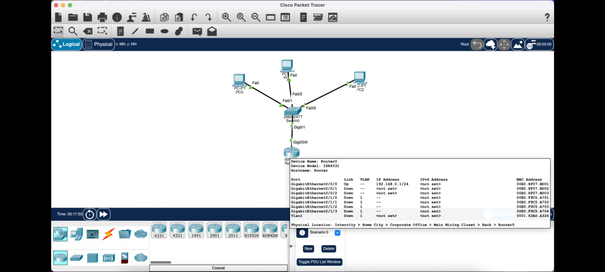

Asesoria en Redes Informaticas
La Empresa "Comunica Todo" les ofrece las siguientes asesorias en clases sobre Redes Informaticas, ya que la empresa
se interesa en el desarollo profesional de todas las personas que les interesa el area de Redes Informaticas, debido a eso
nuestra empresa le provee clases en linea para que pueda saber lo practico sobre las Redes informaticas y luego pueda
saber lo mas avanzado con clases educativas y muy dinamicas. Las asesorias se imparten en cursos de distintas plataformas:
Via web, asesorias en Zoom y Aplicaciones.
Cisco Packet Tracer
Cisco Packet Tracer es una plataforma de Clases para el Estudio de Redes Informaticas, las clases se impartiran a base de
este programa y se vera la creacion, configuracion y desarollo de redes virtuales mediante el simulador de Redes del Cisco
Packet Tracer, añadiendo tambien, las clases se basaran en entornos de Redes Domesticas, Privadas, Empresariales y Metropolitanas,
las clases se añadiran a una basta cantidad de cursos que usted podra cursar para hacerse especialista en un ambito de Tecnico
Informatico en Redes.

Aprenda para poder trabajar
Las Clases son en Linea y usted puede cursarlos cuando desee, solo haga el registro llamando al 1-500-2412 o al 1-500-7770,
o bien mandenos un mensaje de correo electronico al ComunicaTodo@gmail.com o al ComunicaTodoIn@gmail.com, o si bien lo desea
mandenos un mensaje a nuestras redes sociales: Facebook:ComunicaTodo/ Instagram:ComunicaTodoIn/ Reddit:ComunicaTodo2022.